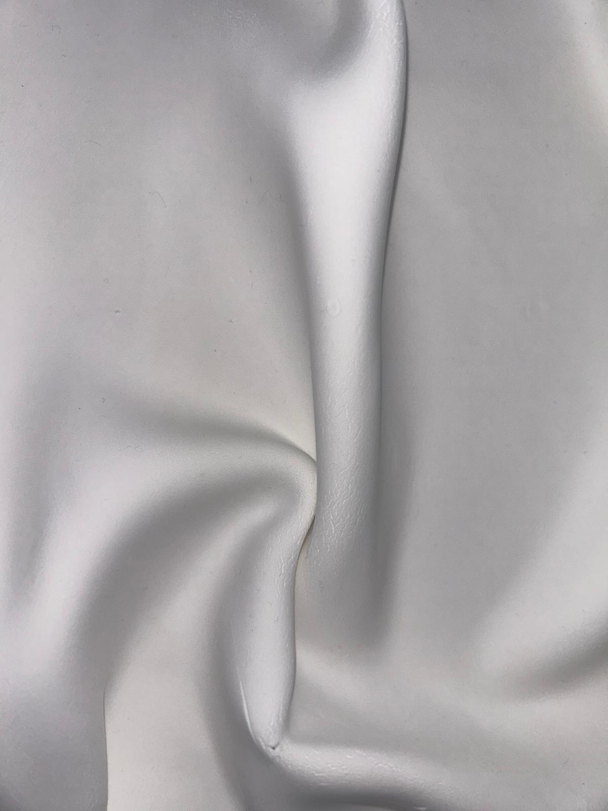

<section id="aboutus" class="fadeInLeft">
    <div class="container mt-5">
        
        <div class="about-us-section fadeInLeft">

            <div class="about-us-header mb-5">
               Products
            </div>
            </div>
           
      


        <div class="swiper mySwiper">
          <div class="swiper-wrapper">
            <div class="swiper-slide">
              
      
      
              <div class="card-container">
                  <div class="card">
                  <div class="front-content">
                      
                    <!-- <p>Hover me</p> -->
                  </div>
                  <div class="content">
                    <p class="heading">KNOTTED LUXURIES</p>
                    <p>
                      Crafted with meticulous precision by the hands of artisanal
                      masters, each thread is proof of their unwavering dedication
                      to their craft. The weave whispers ancient tales, the intricate
                      patterns dance across the fabric, echoing the culture of
                      forgotten civilizations.
                      A fine tactile tapestry, they invite your fingers to explore the
                      fine nuances of their surface. Warmth and strength coalesce,
                      encapsulating the dichotomy of nature itself. Knotting caters
                      to portraits, devotional, abstracts and wall designs with one of
                      a kind craftsmanship.
                    </p>
                  </div>
                </div>
                </div> 
      
            </div>
            <div class="swiper-slide">
              
               <div class="card-container">
                  <div class="card">
                  <div class="front-content">
                      
                    <!-- <p>Hover me</p> -->
                  </div>
                  <div class="content">
                    <p class="heading">WALL WORK</p>
                    <p>
                      Introducing wall work as our abstract line with exquisite art
                      pieces fro your walls. Discover the allure of clay draping and
                      embrace a renaissance of style with Studio woven walls.
                      Explore the depth and authenticity that only natural materials
                      can provide, as we usher in a new era of home decor inspired
                      by the beauty of earth and the craftsmanship of human hands.
                      Elevate your living spaces with the essence of clay, curated
                      with passion and delivered with care.
                    </p>
                  </div>
                </div>
                </div> 
      
            </div>
            <div class="swiper-slide">
              
               <div class="card-container">
                  <div class="card">
                  <div class="front-content">
                      
                    <!-- <p>Hover me</p> -->
                  </div>
                  <div class="content">
                    <p class="heading">TUFTED ARTISTRIES</p>
                    <p>
                      Intricate creations which blend traditional textile techniques
                    with modern design sensibilities. The result? Stunning and
                    versatile wall ornaments that add warmth, texture, and
                    character to any space.
                    Tufted wall hangings are not limited to a particular style or
                    theme. Some are bohemian-inspired pieces with fringe and
                    earthy tones, while others are more minimalist designs with
                    clean lines and monochromatic color schemes. This versatility
                    ensures that there's a tufted wall hanging for every taste and
                    interior design preference.
                    </p>
                  </div>
                </div>
                </div> 
      
            </div>
         
          </div>
          </div>
          </div>
    </section>